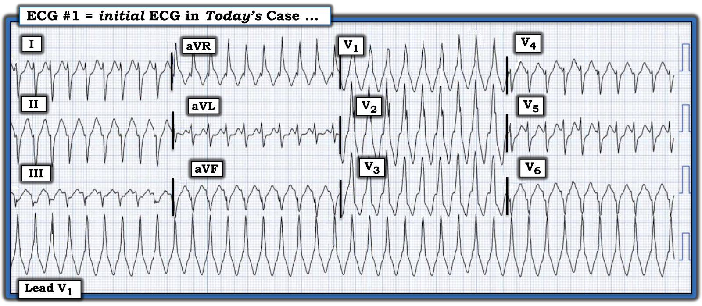
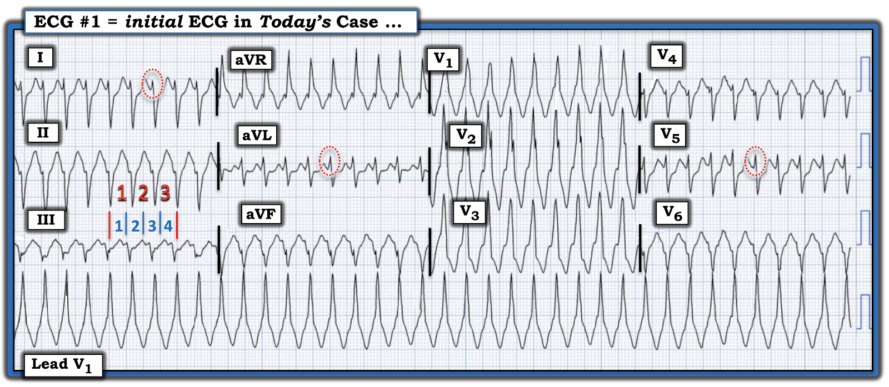
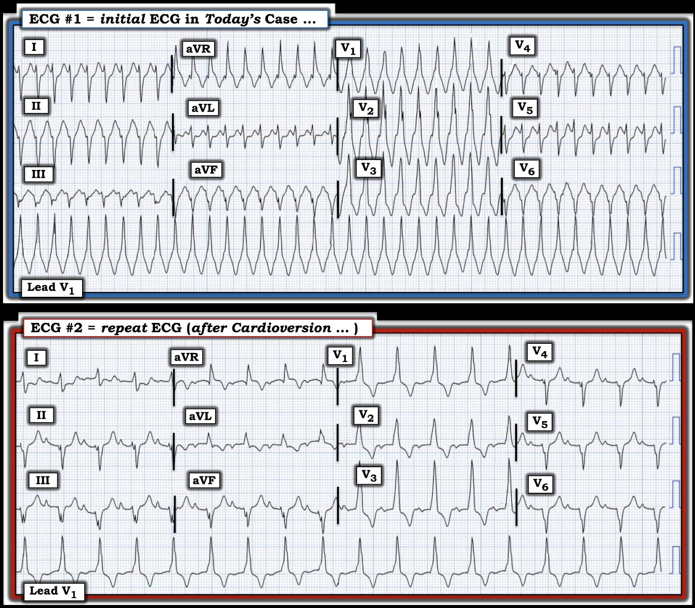

ECG Blog #455 — Là VT cho đến khi chứng minh điều ngược lại?
Tôi được nhờ đọc điện tâm đồ trong Hình-1 — chỉ được biết rằng người đàn ông khoảng 30 tuổi này có tiền sử đã trải qua nhiều cuộc phẫu thuật vì CHD (bệnh tim bẩm sinh — Congenital Heart Disease) khi còn nhỏ.
CÂU HỎI:
- Ở Hình-1 — Nhịp này là VT — hay — SVT kèm dẫn truyền lệch hướng — hay — có thể không phải khả năng nào trong hai khả năng này?
- NẾU được biết rằng bệnh nhân này bị tụt huyết áp kèm theo nhịp ở Hình-1 — thì nguyên nhân cụ thể của nhịp này là gì có quan trọng không? Nếu có quan trọng — Tại sao lại quan trọng?


SUY NGHĨ CỦA TÔI về điện tâm đồ ở Hình-1:
Điện tâm đồ ở Hình-1 cho thấy một WCT (nhịp nhanh QRS rộng — Wide-Complex Tachycardia) đều với tần số ~225/phút, không có dấu hiệu rõ ràng của hoạt động nhĩ.
- Hình thái QRS — rõ ràng là rất bất thường vì: i) Trục mặt phẳng trán bất thường (trục không xác định) (với phần âm chiếm ưu thế ở các chuyển đạo chuẩn I,II,III); — ii) Có sóng R một pha ở chuyển đạo V1 (phù hợp với dẫn truyền kiểu RBBB — nhưng thiếu hình dạng ba pha rsR' thường gặp của RBBB ở chuyển đạo V1); — và, iii) QRS về cơ bản âm hoàn toàn ở chuyển đạo V6.
- LƯU Ý: Trong hầu hết các trường hợp — khi gặp một nhịp WCT đều với hình thái QRS rất bất thường và không có dấu hiệu rõ ràng của hoạt động nhĩ ở người lớn, phải coi đó là VT (nhịp nhanh thất — Ventricular Tachycardia) cho đến khi chứng minh được điều ngược lại. Xác suất thống kê để một nhịp WCT đều như vậy hóa ra là VT là ≥80%.
Dù đã nói như trên — tôi không tin chắc rằng nhịp của ca hôm nay là VT.
- ĐIỂM THEN CHỐT (PEARL) #1: Đặc điểm MẤU CHỐT trong bệnh sử hôm nay là bệnh nhân này được chẩn đoán CHD khi còn nhỏ và đã trải qua nhiều cuộc phẫu thuật vì bệnh này. Do đó — KHÔNG THỂ đoán trước điện tâm đồ "nền" của anh ấy trông như thế nào! Bất kể hình thái QRS ở Hình-1 có bất thường đến mức nào — với tiền sử nhiều lần phẫu thuật vì CHD như vậy, hình thái QRS ở Hình-1 không mang lại giá trị tiên đoán nào (Xem ECG Blog #422 về một ca WCT đều khác với hình thái QRS bất thường ở một người lớn mắc CHD).
- ĐIỂM THEN CHỐT #2: Ca hôm nay là một ví dụ tuyệt vời cho thấy việc tìm được một điện tâm đồ nền ở người lớn mắc CHD này rõ ràng sẽ giúp hiểu rõ vấn đề. Nó có lẽ sẽ cho chúng ta biết hình thái QRS bất thường mà ta thấy ở Hình-1 là hậu quả của VT hay SVT (tức là, hình thái QRS bất thường là hậu quả của bệnh tim bẩm sinh nền của bệnh nhân).
- ĐIỂM THEN CHỐT #3: Tỷ lệ sống sót của trẻ mắc CHD cao hơn nhiều so với những gì phần lớn bác sĩ lâm sàng nghĩ. Hiện nay, có tới 97% trẻ mắc CHD sống đến tuổi trưởng thành — và hơn 75% trẻ mắc CHD đã đạt 18 tuổi sẽ tiếp tục sống qua tuổi trung niên (Dellborg và cs. — Circulation 147(12):930-938, 2023). Do đó, không có gì đáng ngạc nhiên khi nhiều trẻ từng được chẩn đoán CHD, kể cả CHD nặng — vẫn sống để sau này, khi đã trưởng thành, đến khoa cấp cứu (ED) vì các biến chứng (như loạn nhịp nhanh).
- ĐIỂM THEN CHỐT #4: Xem kỹ hơn điện tâm đồ ban đầu của ca hôm nay — có một đặc điểm ủng hộ nhịp này là SVT (nhịp nhanh trên thất — SupraVentricular Tachycardia) thay vì VT. Lưu ý rằng phần khởi đầu (initial deflection) của QRS ở một số chuyển đạo là hẹp (nằm trong các hình bầu dục chấm ĐỎ ở chuyển đạo I, aVL, V5 trong Hình-2). Thông thường với VT — vì xung động phát sinh từ tâm thất (xa hệ thống dẫn truyền) — phần khởi đầu của QRS có xu hướng chậm hơn (rộng hơn) so với những gì ta thấy trong các hình bầu dục chấm ĐỎ ở Hình-2.


- ĐIỂM THEN CHỐT #5: Hình-2 nhắc lại phương pháp Cách-Một-Nhát (hay trong ca này là Cứ-Mỗi-Ba-Nhát) để ước tính nhanh tần số tim. Các số ĐỎ cho thấy để ghi được 3 nhát — cần 4 ô lớn (các số XANH). Như vậy, 1/3 tần số tim = 300 ÷ 4 = 75/phút X 3 = 225/phút (Xem ECG Blog #210 để biết thêm về phương pháp Cách-Một-Nhát).
- Ước tính tần số tim nhanh và chính xác thường cung cấp manh mối quan trọng về nguyên nhân của một số loạn nhịp — tuy nhiên trong ca hôm nay, tần số ~225/phút không có giá trị để phân biệt VT với các nhịp SVT.
- ĐIỂM THEN CHỐT #6: Chúng ta được biết bệnh nhân hôm nay bị tụt huyết áp kèm theo nhịp ở Hình-1. Do đó — nhịp này là VT hay SVT đều không quan trọng, vì điều trị ban đầu là như nhau! Đã tiến hành sốc điện chuyển nhịp đồng bộ — và chuyển nhịp thành công cho bệnh nhân sang bản ghi phía dưới ở Hình-3.
- ĐIỂM THEN CHỐT #7: Chẩn đoán phân biệt hay được nêu nhất cho nhịp WCT đều trong ca hôm nay là giữa VT và SVT kèm dẫn truyền lệch hướng. Không chỉ đơn thuần là vấn đề ngữ nghĩa — điều quan trọng là cần hiểu rằng nguyên nhân thường gặp khác của SVT có QRS giãn rộng là BBB (blốc nhánh — Bundle Branch Block) có từ trước. Điều này khác với QRS giãn rộng xuất hiện do tần số tim quá nhanh không cho đủ thời gian để một phần của hệ thống dẫn truyền phục hồi đặc tính dẫn truyền (tức là, dẫn truyền lệch hướng liên quan tần số — trường hợp này QRS sẽ hẹp trên bản ghi nền và khi trở về nhịp xoang sau khi chuyển nhịp WCT nhanh).
CÂU HỎI:
- Bây giờ khi đã thấy nhịp sau chuyển nhịp ( = điện tâm đồ #2) — Điều này có làm thay đổi cách diễn giải của bạn về nguyên nhân của nhịp WCT đều ở điện tâm đồ #1 không?


TRẢ LỜI:
Nhịp sau sốc điện chuyển nhịp ở điện tâm đồ #2 là nhịp xoang với tần số ~110/phút — vì ta thấy rõ sóng P dương ở chuyển đạo II với khoảng PR hằng định ~0.20 giây.
- Chẳng phải hình thái QRS trên bản ghi sau sốc điện chuyển nhịp trông rất giống hình thái QRS trong lúc WCT sao? Mặc dù có vài khác biệt nhỏ về hình thái QRS giữa 2 bản ghi ở Hình-3 — nhưng có nhiều điểm giống nhau hơn, bao gồm: i) Trục mặt phẳng trán lệch trái rõ rệt — với phần âm chiếm ưu thế trông rất giống nhau ở các chuyển đạo II,III,aVF; — ii) Hình dạng sóng R một pha ở các chuyển đạo V1,V2,V3 gần như giống hệt nhau trên cả hai bản ghi; — và, iii) QRS có phần âm chiếm ưu thế ở các chuyển đạo V4,V5,V6 trên cả hai bản ghi — với QRS gần như âm hoàn toàn ở chuyển đạo V6 gần như giống hệt nhau.
- ĐIỀU CỐT LÕI: Tôi diễn giải sự giống nhau rõ rệt về hình thái QRS trong lúc WCT và sau khi chuyển về nhịp xoang — là dấu hiệu cho thấy cơn nhịp nhanh hôm nay là hậu quả của một SVT kèm RBBB/LAHB có từ trước ở người đàn ông khoảng 30 tuổi này, người đã biết mắc CHD và có tiền sử đã trải qua một loạt phẫu thuật khi còn nhỏ.
- Nhận định này có thể được xác nhận bằng cách tìm một điện tâm đồ nền trước đây của bệnh nhân hôm nay. Dù vậy, bất kể nguyên nhân nhiều khả năng là trên thất của WCT hôm nay — thăm dò điện sinh lý (EP) (với khả năng điều trị bằng triệt đốt) vẫn được chỉ định do tụt huyết áp kèm theo loạn nhịp có khả năng đe dọa tính mạng mà ta đã thấy ở Hình-1.
- T.B. (P.S.): Về mặt kỹ thuật — khoảng PR 0.20 giây thấy trên bản ghi sau chuyển nhịp ở Hình-3 chưa "đủ dài" theo định nghĩa loạn nhịp chuẩn để được xếp là blốc AV độ 1. Dù vậy, khoảng PR thường ngắn lại khi nhịp nhanh. Do đó — khoảng PR ở điện tâm đồ #2 trông dài-hơn-mức-đáng-lẽ-phải-có. Xét tiền sử CHD nặng khi còn nhỏ của bệnh nhân này và sự hiện diện của blốc hai phân nhánh (RBBB/LAHB) sau khi chuyển về nhịp xoang — tôi sẽ diễn giải đây có lẽ là dấu hiệu của một rối loạn dẫn truyền ở khoảng PR (và là thêm một lý do để hội chẩn điện sinh lý).

==========================================
Lời cảm ơn: Xin cảm ơn người đã gửi ca bệnh này dưới dạng ẩn danh.
==========================================
==============================
Các bài ECG Blog liên quan bổ sung cho ca hôm nay:
- ECG Blog #185 — Ôn lại Hệ thống đọc nhịp của tôi — sử dụng Cách tiếp cận Ps, Qs & 3R.
- ECG Blog #210 — Ôn lại phương pháp Cách-Một-Nhát (hay Cứ-Mỗi-Ba-Nhát) để ước tính tần số tim nhanh — và bàn về một ca nhịp WCT đều khác.
- ECG Blog #422 và Blog #425 — Các ca bệnh tim bẩm sinh ở người lớn.
- ECG Blog #220 — Ôn lại cách tiếp cận WCT ( = nhịp nhanh QRS rộng — Wide-Complex Tachycardia) đều.
- ECG Blog #196 — Một ca khác với WCT đều.
- ECG Blog #263 và Blog #283 — Blog #361 — và Blog #384 — Thêm các nhịp WCT ...
- ECG Blog #197 — Ôn lại khái niệm VT vô căn, trong đó VT phân nhánh (fascicular VT) là một trong 2 thể thường gặp nhất.
- ECG Blog #346 — Ôn lại một ca LVOT VT (VT đường ra thất trái — một thể VT vô căn ít gặp hơn).
- ECG Blog #204 — Ôn lại chẩn đoán điện tâm đồ các blốc nhánh (RBBB/LBBB/IVCD).
- ECG Blog #203 — Ôn lại chẩn đoán điện tâm đồ về trục và các blốc phân nhánh. Để ôn lại hình thái QRS trong các blốc hai phân nhánh (RBBB/LAHB; RBBB/LPHB) — Xem Video Pearl trong bài blog này.
- ECG Blog #211 — TẠI SAO lại xảy ra dẫn truyền lệch hướng?
- ECG Blog #301 — Ôn lại một WCT có nguồn gốc trên thất! (với RẤT NHIỀU nội dung về dẫn truyền lệch hướng).
- ECG Blog #445 — Thêm một nhịp WCT đều khác ...
- ECG Blog #323 — Ôn lại VT phân nhánh.
- ECG Blog #38 và Blog #85 — Ôn lại VT phân nhánh.
- ECG Blog #278 — Một ca khác về nhịp WCT đều ở một người lớn trẻ tuổi hơn.
- ECG Blog #35 — Ôn lại VT RVOT (VT đường ra thất phải).
- ECG Blog #42 — Tiêu chuẩn phân biệt VT với dẫn truyền lệch hướng.
- ECG Blog #133 và ECG Blog #151— các ví dụ trong đó phân ly nhĩ thất đã xác nhận chẩn đoán VT.